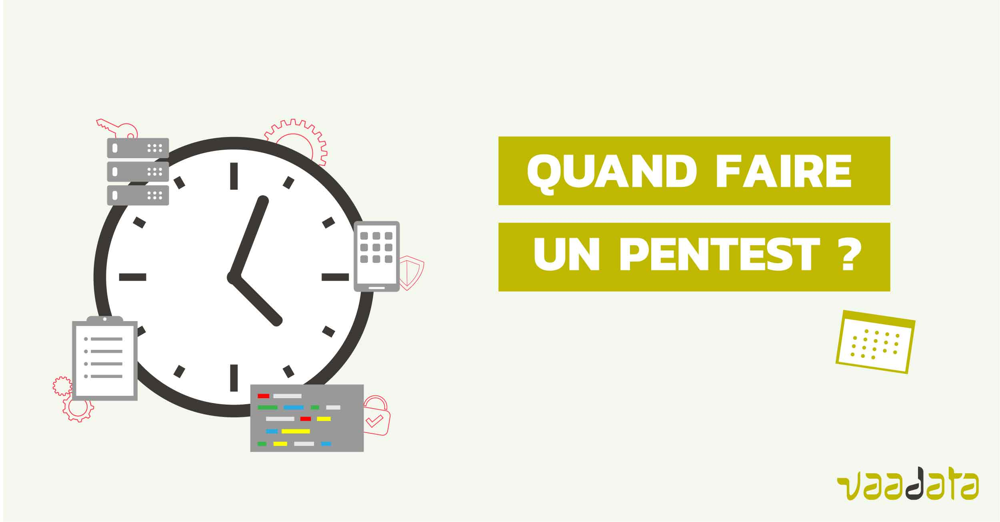

À propos
Je suis étudiant en Bachelor 2 de Cybersécurité, avec un intérêt particulier pour les tests d'intrusion et la défense des systèmes.
Je m'efforce de rester discret et respectueux des pratiques éthiques dans le domaine de la cybersécurité, tout en cherchant à acquérir une expertise dans ce domaine passionnant.
Projets en Cybersécurité

üîç Analyse de Vuln√©rabilit√©s
Audit de systèmes avec Nessus et OpenVAS.
- üìå D√©tection des failles dans les r√©seaux et applications.
- üìå Analyse des CVE et recommandations de correctifs.

üöÄ Capture The Flag (CTF)
Participation à des challenges sur HackTheBox et TryHackMe.
- üîπ Exploitation de failles Web et reverse engineering.

üõ† D√©veloppement d‚Äôun outil de pentest
Création d’un script Python pour automatiser certaines attaques de pénétration.
- ✅ Bruteforce SSH et scan de ports avec Nmap.
Mon CV
Téléchargez mon CV ici :
Mes Projets GitHub
Découvrez mes outils et scripts sur GitHub.
Me Contacter
Pour toute demande professionnelle ou collaboration, veuillez me contacter :